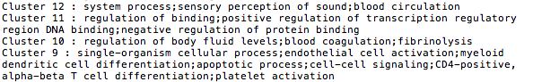
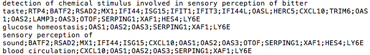
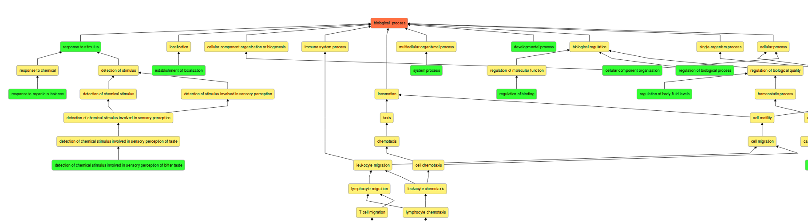
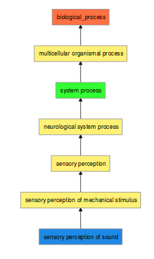
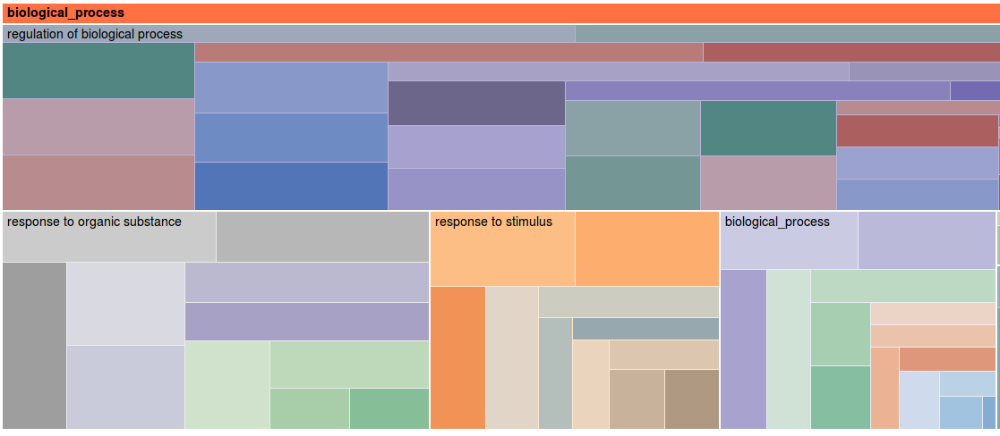

2 files must be use as input in order to create the visualization.
They have to be in a CSV format, as the example below :
1st file :

2nd file :

For the visulal optimazation, the number of terms by cluster and the number of genes for each terms should not exced 200.
There will be two visualization object on the page, a DAG on top and a treemap below.
On the DAG object :

1. General visualization of the directed acyclic graph at the level 0 (links root to representatif terms).

2. General visualization of the directed acyclic graph at the level 2 (link root to terms).
On the treemap object :
There is interactions from the DAG to the treemap, by clicking on the colored rectangles, and from the treemap to the DAG.
